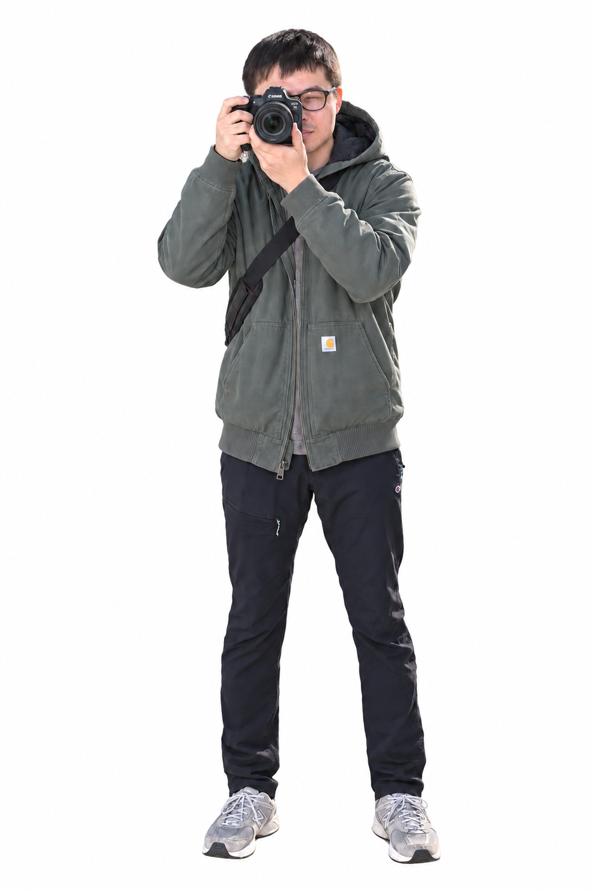

OrbChartsDATA, IN MOTION
A DIFFERENT VIEW OF DATA.OrbCharts
Data visualization / Open source

Senior Software Engineer/Shutterbug/Cycling Lover
SCROLL TO EXPLOREThoughtful interfaces. Clear information.
Small details that make a difference.
Data visualization / Open source
Every company.
A bigger picture.
Product engineering / Information design
Notes on interfaces, systems, and the craft of building for the web.
Light, quiet moments, and the details worth stopping for.
Two wheels, fresh air, and a little room for curiosity.
Good things start with a conversation.
Taipei, Taiwan · Somewhere between code and a camera.